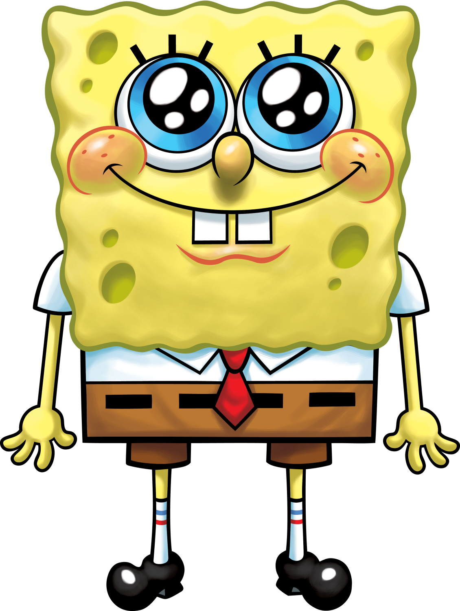

Spongebob Squarepants
Fry Cook
Address: 124 Conch Street, Bikini Bottom, Pacific Ocean
Phone: 555-555-9196
Email: spongebob@bikinibottom.com
Address: 124 Conch Street, Bikini Bottom, Pacific Ocean
Phone: 555-555-9196
Email: spongebob@bikinibottom.com
Dedicated and highly motivated sea sponge with an unwavering commitment to excellence and an infectious enthusiasm for life. Seeking a challenging position where I can leverage my proven skills in customer service, teamwork, and problem-solving to contribute significantly to an organization's success. With a relentless drive to make every day a positive and memorable experience for both colleagues and customers, I aim to play an integral role in fostering a vibrant and productive work environment. My can-do attitude, combined with my ability to adapt to dynamic situations, equips me to thrive in high-pressure settings while maintaining an unwavering commitment to excellence. Ultimately, I aspire to be a valuable team member who not only meets but exceeds expectations, bringing boundless energy, innovation, and creativity to any organization fortunate enough to have me on their team.